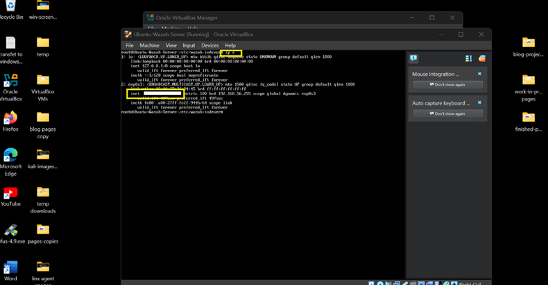
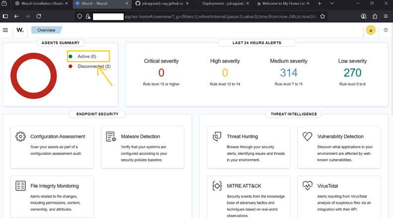
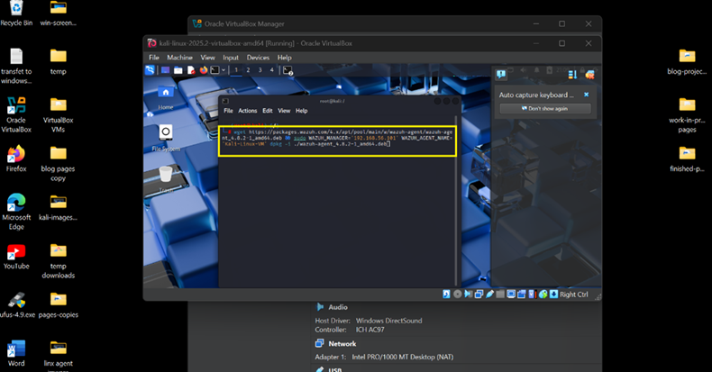
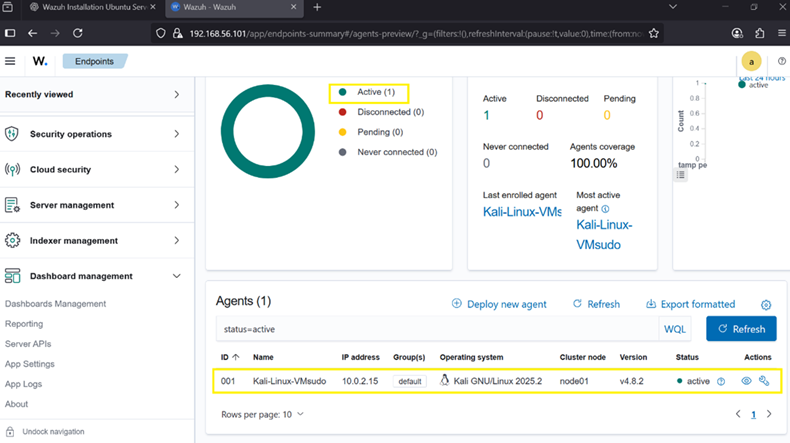

Overview
The Wazuh Agent collects system logs and security telemetry from Kali Linux and forwards them to the Wazuh SIEM server for centralized monitoring.
Requirements
- Kali Linux VM
- Wazuh Server (Ubuntu) deployed
- Network connectivity between systems
- Wazuh dashboard access
Step 1 — Get Wazuh Server IP
On the Ubuntu Wazuh server:
ip a
Identify the inet address used for agent communication.

Step 2 — Deploy Agent from Dashboard
- Log in to Wazuh dashboard
- Go to Agents → Deploy New Agent
- Select DEB package (amd64)
- Enter server IP and agent name
- Copy generated install commands

Step 3 — Install Agent on Kali
Switch to root:
sudo su
Run installation commands from dashboard.
Enable and start service:
sudo systemctl daemon-reload
sudo systemctl enable wazuh-agent
sudo systemctl start wazuh-agent
Verify status:
sudo systemctl status wazuh-agent

Step 4 — Verify in Dashboard
Confirm that Kali Linux appears as an active agent in the Wazuh dashboard.

Step 5 — Monitoring Scope
- System and auth logs
- Process monitoring
- File integrity events
- Security alerts
- Rootkit detection signals
Install Complete
Kali Linux is now integrated into the SIEM pipeline as a monitored endpoint.